Clavis Generalis Triplex in Libros Steganographicos
Threefold General Key to the Steganographic Books
prdl-70281_clavis-generalis-triplex-in-libros-steganographicos · Style C / Recovered untranslated passages
About These Recovered Passages
These are Latin passages that were absent from the standard prose translation path and were recovered as separate scholarly renderings. They preserve uncertainty markers where the OCR is damaged and should be checked against the Latin before quotation.
Per-chunk renderings
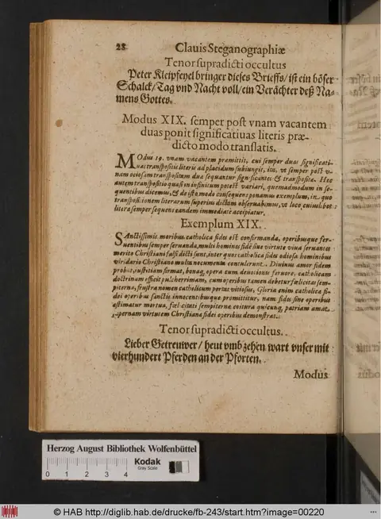
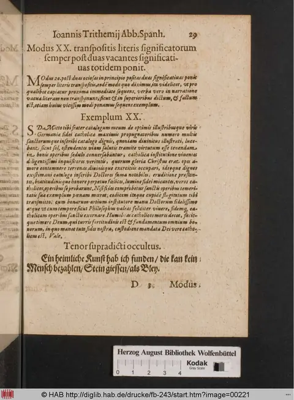
Clavis Steganographiae (Clavis triplex) — untranslated chunk full_chunk_0104
Style C scholarly rendering. GPT-5.5 fresh translation with footnoting against the angels / planets reference table. Source register: ocr_damaged_prose; OCR quality estimate: 2/5.
Modes XXXI-XXXII: Alternating Significant Letters and a Thirteenth-Place Alphabet
The passage presents two steganographic examples from Trithemius’s Clavis, including German hidden messages, substitution alphabets, strings of significant letters, and heavily corrupted Latin cover letters dated from Spanheim in January 1499.
Clavis of Steganography
[unclear] if the following letter after the father is taken, let vb stand for A, m for e, and let p be taken as vb, with an alphabet of this sort that breaks the order.^1
Alphabet
An bo op dq er fg hx kz la mb nc od pe qf rg sb ti uk xl zm.^2
Wording of the Secret
“The old abbot of Fleiszdorff wanted to cut off the noses of those from Reinharstborn.” This is the intention and mystery of the message.^3
Significant Letters
Orgnairneikdecaxbhqayixhagresekertcangqihodge qxrenbrenohpueqxre.
Example XXXI
S. D.^4 Everyone who acts with regard to temporal goods [unclear] alms and the virtues of the world, and yet, once transitory things have been set aside, would be a lover of the way of life, which true charity seeks, cannot [unclear] under any condition. For the holy [unclear] says that the religion of the Christian faith^5 has forbidden love of the world to its own people; for whoever loves the joys of the world easily loses eternal [life]. Living among Catholics but not in a Catholic manner, he does not love Christ. And those who love [unclear] do not say that temporal goods are good in a Catholic sense. Let those who love the Creator rejoice in spiritual things. The lover of Christ, content with all the vanities of the world [set aside], does not care for them; let those who are lovers of the world seek human joys. [unclear] hates virtue; he cares nothing for joys to come. Altogether, one who [unclear] Christ’s [unclear], intent on one thing, recognizes things that are not human, and acts against religion [unclear] along my way; he wished that the experienced things of this world ought to be borne, if any should love vanity. Rather, take care to love Christ, that he may receive you into the heavenly kingdoms.^6 Farewell. From Spanheim, on 7 January, in the year 1499. Johannes Trithemius, abbot.^7
Method XXXII: It Advances by Alternating in Turn, and the First Significant Letter Is Transferred to the Thirteenth Place
Method 32
In alternating words, after the manner of the preceding [method], the narration is used as follows: the mystery begins from one vacant [word or place], and the other is always signified in reverse order. Therefore, in the first significant word, take the thirteenth following letter in alphabetical order as A; take p for b, q for c, and so on in consequence, as is clear.^8
A o. b p. c q. d r. e s. f g. u h. x z. k a. l b. m o. n d. o e. p f. q g. r b. s t. k u. l x. m z. n.
“Tonight at 9 o’clock, if you hear me whistle near the wood with a key, come down to me.” This intention lies hidden secretly in the following narration.
Significant Letters
Degxzaklep 9 lxbl drlezqxdorfllobrxehf ikfts rts dc zk f z dfeig x b lisfbia aee xfb opnlez b.
Example XXXII
S. D. Almighty God, eternal creator of all things, who through his Son Christ redeemed us Christians, gave us the veil of Catholic love through the light of grace. To us who believe, he gave [unclear] and the beloved Son of his generosity, made human, freeing us from the prison of [unclear], as we flee every penalty of Tartarus.^9 Destroying the prison, [unclear] most verbose advocate and ruling [unclear]. What worthy thing shall we Christians be able to render to Christ, who made us Christians, weak human beings? Therefore [unclear] by the works of [unclear], professing the Catholic faith, we commemorate most devoutly the supreme praise of our redeemer and celebrate it, saying: Praise be to you, eternal and most kindly Savior of all, who redeemed us by your blood. Confirm our frailty by zeal for your love. Sweetest Savior Jesus, kindle in our hearts zeal for your faith. O holy zeal of yours, illuminate in the hearts of your servants compassion for your works, most kindly Christ. Most kindly Christ, eternal light, illuminate the darkness of your servants. Savior, save our souls, granting eternal joys. Christ, hear your humble servants, and pardon the sins of all who entreat you. Save your Christian servants, though we are unworthy; mark us with your zeal, we humbly ask. Amen. Farewell. From Spanheim, 13 January, in the year of the Lord 1499. Johannes Trithemius.^10
^1. The title should read Clavis Steganographiae, “Key of Steganography.” The opening line is badly damaged OCR, but it clearly introduces a substitution alphabet whose order is deliberately displaced.
^2. Trithemius’s alphabeta in these examples are not ordinary alphabets but cipher keys: paired letters indicate how plaintext units are to be recovered from the cover text.
^3. The German sentence is the plaintext or tenor secreti, the message hidden beneath the Latin religious cover letter. The place names are left as transmitted; the OCR gives no secure modern identification.
^4. S. D. is the conventional epistolary abbreviation for salutem dicit, “sends greeting,” commonly placed at the opening of humanist Latin letters.
^5. “Christian faith” and “Catholic” here function as pious cover vocabulary. In the Steganographia such devotional prose often masks a mechanically encoded message rather than serving as the primary communication.
^6. The dense moral contrast between temporal goods and heavenly reward echoes standard late-medieval ascetic commonplaces, but the syntax here is substantially corrupted by OCR.
^7. Spanheim, or Sponheim, was the Benedictine abbey where Johannes Trithemius served as abbot before his later move to Würzburg. The date “7 January 1499” is transmitted in the OCR as “7. Idaenum Ianuarj,” apparently corrupt for an early-January dating formula.
^8. “Thirteenth place” describes a rotated substitution alphabet comparable in principle to a Caesar shift: the alphabetic value of the significant letter is displaced by thirteen positions, while the cover narration supplies the recoverable sequence.
^9. Tartarus is used in Christian Latin as a classical name for the infernal prison or hell; the surrounding wording is badly damaged but belongs to a redemption-from-hell devotional register.
^10. “13 January 1499” is inferred from “& Idunum Ian. Anna Demini 1499,” a corrupt OCR form probably representing Idibus Ianuarii, anno Domini 1499 or a related dating formula.
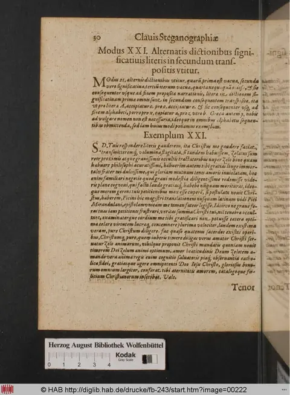
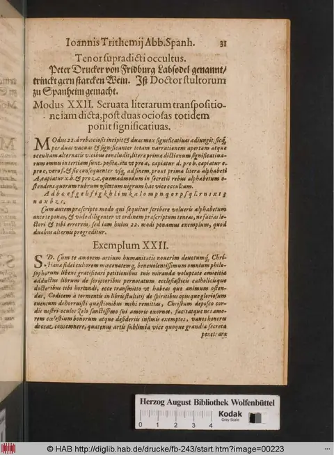
Clavis Steganographiae (Clavis triplex) — untranslated chunk full_chunk_0105
Style C scholarly rendering. GPT-5.5 fresh translation with footnoting against the angels / planets reference table. Source register: ocr_damaged_prose; OCR quality estimate: 2/5.
Mode 33 and the Opening of Mode 34: Alternating Words and Alphabetic Shifts
The passage explains two steganographic procedures in which alternate cover words carry a hidden message by shifting the first letter of each significant word through a fixed substitution alphabet, followed by German hidden texts, significant-letter strings, and a damaged sample cover letter attributed to Trithemius.
Mode XXXIII
Mode 33, proceeding by alternate words as the preceding modes do, transfers the first significant letter to the fourteenth place.^1
Mode 33 begins the second narrative with one vacant word,^2 and then proceeds by alternate words in turn. For the first significant letter of each word it takes the letter following it in the fourteenth place: thus for A, P is taken; for B, Q; for C, R; and so continuously through the order of the alphabet, as in the alphabet that follows.^3
Alphabet
A P; B Q; C R; D S; E T; F U; G X; H Z; I A; K B; L C; M D; N E; O F; P G; Q H; R I; S K; T L; U M; X N; Z G [sic].^4
Tenor of the Secret
The tenor of the secret is this: “Eriss noch neu/perfuch ihn vor ganz wolche deint ihm viel vertraut. Ertrinckt auch gern Wein undt is wunderlich.”^5
Significant Letters
Tcaklefrzettmmmttkmrcazemfixpelmmtfztteazdmactmtiplmptlliarerbipmvrzxtiemmtaemsefaklmmeisticarz
Example XXXIII
Johannes Trithemius,^6 sending solicitous concern to the nuns of Saint [unclear],^7 who adorn the bright virginity of the Catholic faith on the Mount of Olives of Saint Rupert,^8 [unclear]. The passage then gives a long cover letter, badly damaged in transmission, concerning a monk or abbot connected with Limpurg,^9 service to Christ, prayer, scriptural reading, the care of temporal affairs, and the reception of a man in honor and sincere charity. It ends with an exhortation to lay aside “all levity of womanly spirit,” to restore the collapsed temporal condition of the monastery with Christ’s help, and to remain under Christ the redeemer and zealot of chastity. Farewell. 7 ides. Johannes Trithemius.
Mode XXXIV
Mode 34 likewise uses alternate words and transfers the first letter of each significant word to the fifteenth place.
Mode 34 begins, as the preceding one does, with one vacant word and proceeds similarly by alternation: the first word is vacant, the second significant, the third again vacant, the fourth again significant, and so continuously to the end of the proposed narrative. For the first letter of each significant word it takes the letter standing fifteenth after it in the order of the alphabet: thus for A, Q is taken; for B, R; for C, [conjectured: S]; and so continuously, as appears in the alphabet that follows.
A Q; B R; C [unclear]; D [unclear]; E [unclear]; F X; G Z; H A; I B; K C; L D; M E; N F; O G; P H; Q I; R K; S L; T M; U N; X O; Z P.
Hidden Tenor
“Tomorrow at nine o’clock the merchant will come and take the cow from the peasant; keep yours at home.”^10
Significant Letters
Egkzufuerfnfnfnbktuukgebweqgefeufnftmfrqnkf [unclear]nafuenfrubdnutubfagane.
Example 34 begins on the following page.
^1. “Mode” here denotes one of Trithemius’s numbered procedures for hiding a message inside an apparently ordinary narrative in the Clavis Steganographiae. ^2. A “vacant” word is a null or cover word: it belongs to the surface prose but contributes no letter to the hidden message. ^3. The “first significant letter” is the first letter of a non-null word in the cover text; the method uses only those selected initials, not every letter of the prose. ^4. The alphabet omits J, V, and W in the usual early-modern Latin manner, treating I/J and U/V together; the printed final pair “Zg” appears inconsistent with the stated shift and may reflect corruption or a nonstandard alphabetic table. ^5. The German tenor is printed in damaged form and is not normalized here; it appears to be the plaintext instruction or message recovered by the cipher procedure. ^6. Johannes Trithemius (1462-1516), Benedictine abbot of Sponheim and later of St James at Würzburg, is the authorial figure behind the Steganographia and its explanatory Clavis. ^7. The OCR leaves the dedication’s convent name uncertain; “Sancti monialibus” is grammatically damaged and cannot be securely restored from the transmitted text alone. ^8. Saint Rupert is the patron associated with the Rupertsberg, a monastic site near Bingen; the phrase “in monte oliv Ruperti” is OCR-damaged but points to a named religious location in the cover letter. ^9. Limpurg, probably referring to Limburg/Limpurg in the German ecclesiastical landscape, appears in connection with an abbacy or monastery; the passage is too damaged to identify the office securely. ^10. The hidden German message in Mode 34 is clear enough to translate, though “Aumpfmann” is evidently damaged for “Kaufmann,” merchant.
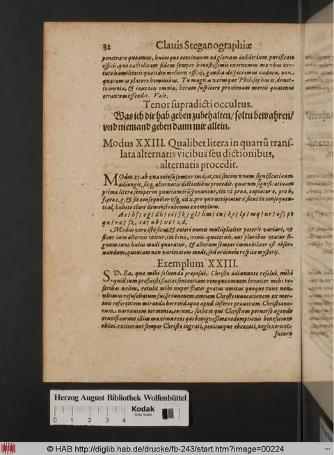
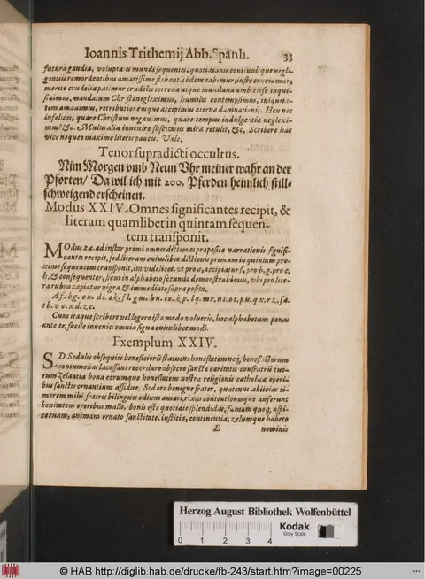
Clavis Steganographiae (Clavis triplex) — untranslated chunk full_chunk_0106
Style C scholarly rendering. GPT-5.5 fresh translation with footnoting against the angels / planets reference table. Source register: ocr_damaged_prose; OCR quality estimate: 2/5.
Mode 35: Alternating Words and a Sixteenth-Place Alphabet
The passage combines a badly corrupted doctrinal preface on the Virgin’s purity with Trithemian steganographic instructions for Mode 35, a German plaintext secret, its significant-letter cipher text, and a damaged example letter before the beginning of Mode 36.
S. D. [conjectured: sends greeting]. Concerning the ecclesiastical matter, he had previously made a large catalogue, as [unclear] recently showed for inspection to the holy brothers of your [unclear]. Suddenly [unclear] not because I envied their turns of benefactions in the catalogue, but [unclear] the catalogue of the slanderer, which [unclear] from envies, because [unclear]. For I, Joseph [unclear], affirmed that the most holy conception of the Mother of God^1 had always been most venerable and was without the stain of original sin,^2 although a swollen and more inwardly swollen [opponent] said that he wished to reprehend it. [Conjectured: To say] that the most blessed Virgin, created with original [sin], was stained, against Catholic observance, by the most empty rashness, would be to disturb the most blessed Virgin, the Mother of God. But the most noble doctors of Cologne,^3 wishing to extirpate a mad and fraudulent opinion contrary to the truth, cited vain fables and compelled them to revoke them; they affirm and confirm that the most blessed Virgin must be believed to have been most pure, and that at no time, however briefly, was she subject to the filth of original sin. There the brother who loved the truth believed and was able briefly and justly to explain the purity of the Virgin. Farewell.
Modus XXXV
Mode 35 uses alternating words, and the first letter of each significant word is permuted to the sixteenth place.^4
Mode 35, in the same way, begins with one vacant word; immediately joining a significant word to it, it proceeds by turns through alternating words. In this mode, however, for the first letter of each significant word one should put the letter placed sixteenth after it. Thus the following alphabet takes r for a, s for b, and t for c, and so on, as is set out in the alphabet that follows.^5
Alphabetum
Alphabet: Ar; bsc; et; du; ex; fz; ga; hh; io; kd; le; mf; ng; oh; pi; qk; rl; fm; tn; uo; xp; zg. [unclear]
Tenor Secreti
The meaning of the secret:
“The abbot of St. Johannes Berg^6 keeps common dealings with the peasants, does not stay much in the cloister, and also travels in the Ship of Fools.”^7
This is the intention of the secret that follows.
Johannes Trithemius, Abbot of Sponheim.^8
Literae significativae
Significant letters:
V xtrinohgm: chbrgmxlabxenxbffogerfenn xgfrolngxfecscngetbnocxeefsthmkologuzxblix wrobefgyrgx. mibcz.
Exemplum XXXV
To my venerable father in Christ, the father of Limburg [unclear], with the titled lord Johannes Ulendorffensis [unclear], John, humble abbot of Sponheim, [unclear]: the nuns of St. Rupert^9 desire their governor with excessive boldness, and humbly ask you, with kindness, that the same governor of the monastery’s temporal affairs [unclear] may be praiseworthy for the holy virgins of Christ, and also a deserving and good [governor] of the spiritual affairs of the same convent; a visitor in Christ who fulfills honor, grave [unclear], adorned with virtues, cautious in counsel, dear to [unclear], a noble abbot, undoubtedly in place of Christ as husband, an excellent shepherd of the monastery of St. John, learned in the letters both of Christians and of pagans, most celebrated among all those instructed in every wisdom, whose wisdom no one can estimate. He will have been able to know very well the flock entrusted to him there, [unclear] the zeal of the virgins of Christ, whose [unclear] he preserves, as promised. He did not make the journey [unclear] to serve the nuns beneficently, who now govern the brides of Christ according to the monastic law with excellent discretion; by virtue and zeal for the Christian faith he gladly assists in truth. This man, pastor of the convent at Bingen,^9 very familiar and friendly to you, [unclear] gladly as governor of such religious virgins; Christ’s immortality will reward your labor with glory, and for the burden of the nuns you will receive eternal blessedness, when he has been more zealous with him. Farewell, 3 [unclear] there, Jan. In the year of the Lord 1449.^10
Modus XXXVI
Mode 36, like the preceding, uses alternating words, and transfers the first [letter] of the significant word to the 71st [unclear].
Mode 36, beginning with a vacant word, joins the significant q in alternating words [the text breaks off].
^1. “Mother of God” renders the expected genitrix Dei behind the OCR’s “generificae Dei”; the phrase anchors the paragraph in late-medieval Marian theology. ^2. The passage is concerned with the Immaculate Conception, specifically whether Mary was ever subject, even momentarily, to original sin. Trithemius writes before the modern dogmatic definition but within a vigorous fifteenth-century theological controversy. ^3. “Cologne” points to the theological faculty and ecclesiastical authorities of Cologne, an important late-medieval German center for doctrinal adjudication; the OCR-damaged paragraph appears to invoke them as defenders of Marian purity. ^4. In Trithemius’s steganographic terminology, verba vacantia are cover or null words, while significant words carry the hidden message, here through their initial letters. ^5. The alphabet is a substitution alphabet for the initials of significant words. The printed/OCR sequence is corrupt, but the instruction clearly describes replacing each initial by the letter six places? or, as printed, sixteen places later in the cipher alphabet; the damaged list has therefore been preserved rather than normalized. ^6. “St. Johannes Berg” is the German S. Johannes Berg, probably Johannisberg; the secret is in vernacular German rather than Latin, as often in these worked examples. ^7. “Ship of Fools” alludes to Sebastian Brant’s Narrenschiff, first printed in 1494, whose title quickly became a proverbial vehicle for folly. ^8. Johannes Trithemius (1462–1516) was abbot of Sponheim from 1483 and the authorial persona of the Steganographia and its Clavis. ^9. St. Rupert’s convent at Bingen is Rupertsberg, the women’s monastery associated with Hildegard of Bingen; the example letter’s proper names are partly obscured by OCR and partly by the steganographic construction. ^10. The date “1449” is incompatible with Trithemius as abbot of Sponheim; it may be an OCR error, a feature of the cover text, or part of the artificial example rather than a historical date.
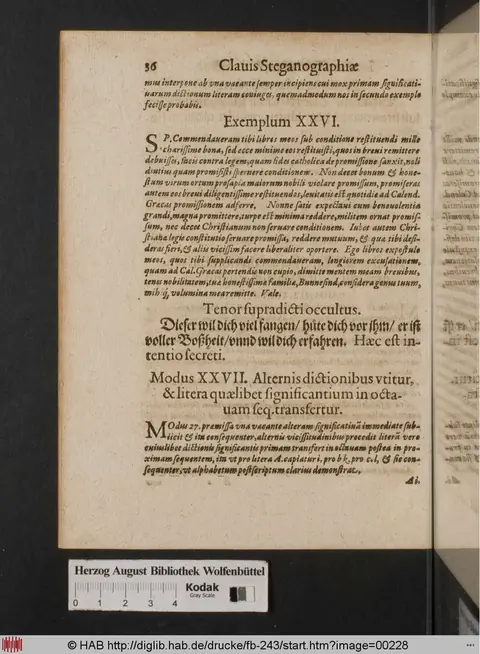
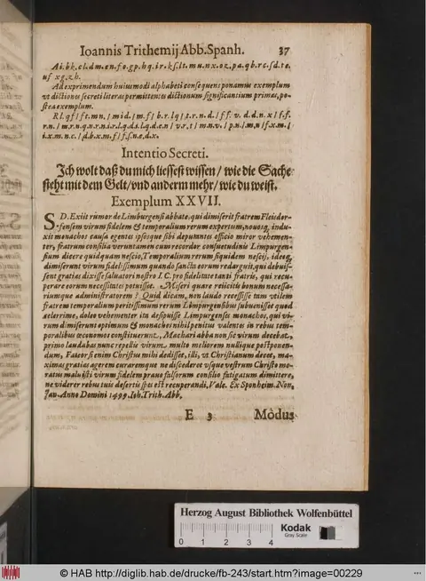
Clavis Steganographiae (Clavis triplex) — untranslated chunk full_chunk_0108
Style C scholarly rendering. GPT-5.5 fresh translation with footnoting against the angels / planets reference table. Source register: ocr_damaged_prose; OCR quality estimate: 2/5.
Mode 37: Alternating Progression and Transfer to the Eighteenth
Trithemius describes the thirty-seventh cipher mode, gives its substitution alphabet, supplies a German concealed intention, and illustrates the method with a pious Latin cover text.
Johannes Trithemius, Abbot of Sponheim.^1
Mode XXXVII
It proceeds alternately, in turn, and the first letter of each significant word is transferred to the eighteenth place.^2
Mode 37 begins, like the preceding one, from one vacant position; it proceeds alternately in turn, so that the first letter of each significant word is changed into the eighteenth letter after it, or A is taken for [unclear], and so on in sequence, as is shown here in the alphabet that follows.^3
Alphabet
At. bu. ex. dz. ea. fb. g. h. bd. i. e. k. f. lg. mh. ni. ok. pl. qm. rn. so. ip. wq. xr. zsf.^4
Intention of the Mystery
Jacob Seum has now spoken: he intends to stab you as soon as he can get at you; beware of him.^5
Significant Letters
Et xknoqhbdiqickolnx daianqgegzexda nopaxdaiokngzanxexdhbactifkhaidgpezex dbkneh.^6
Example XXXVII
Let us contemplate the eternal way. By preserving temporal things for Christ with catholic morals in truth, we shall obtain eternal gladness, which has been promised to the penitent; by the proud, without doubt, it has been promised: temporal joys and delights. The despised life, unwillingly, contains future eternal joys for those who contemn it and love God. For those who are moved by making prayers, by readings, and by writings, to attach themselves to catholic morals in likeness to Christ, for those who love God, hell is not prepared. For those who seek nothing else from God than vanity, condemning joy in eternal majesty, humble men [unclear] the zeal of bitterness through exaltation to Christ, but serving the devil. In the name of the love of God, excellent battles were promised; but for lovers of the world, for proud Christians, God has prepared bitterness through hell. What, I ask, makes a catholic man assent to truth? I say: you who are sworn without zeal for divine love, and who affirm yourself a Christian, do not [unclear] your zeal and Christian faith.^7
^1. Johannes Trithemius (1462-1516), Benedictine abbot of Sponheim, composed the Steganographia and related keys as works combining cryptographic procedure with angelological and theological framing. ^2. Modus here means a cipher procedure or rule-set, not a rhetorical or musical mode; this passage is a numbered technical instruction in the Clavis Steganographiae. ^3. “Significant word” translates dictio significans, a cover-text word whose selected letter carries the hidden message; vacans denotes a null or non-signifying position in the steganographic procedure. ^4. The printed “alphabet” is a cipher alphabet or substitution table. The OCR is partly corrupt, so the groups are preserved diplomatically rather than normalized. ^5. The German sentence is the plaintext “intention” of the hidden message. “Jacob Seum” is left as printed; it appears to be the named person in the sample warning rather than a classical or biblical figure. ^6. The “significant letters” are the encoded string generated by the mode before it is embedded in the Latin cover example. ^7. The example is a pious Latin cover text organized around standard Christian oppositions: temporal and eternal goods, penitence and pride, Christ and the devil, heaven and hell. Several forms are visibly corrupted by OCR, including obtini-/obtinebimus, temporala, latitias, lectiobus, in-fierere, and nibil.
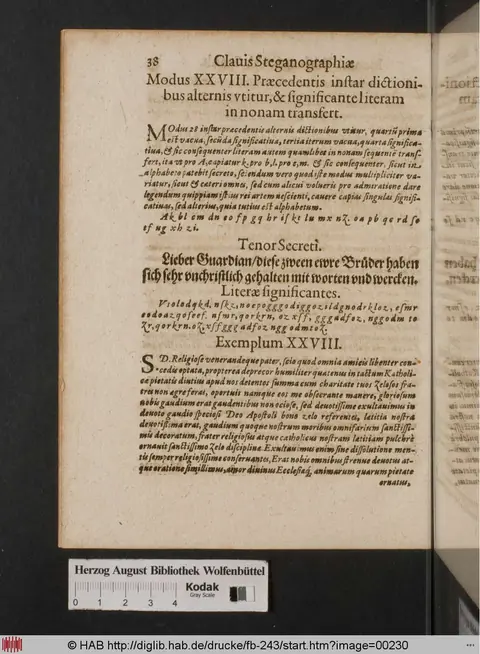
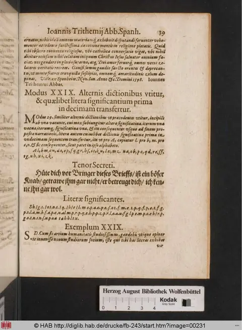
Clavis Steganographiae (Clavis triplex) — untranslated chunk full_chunk_0109
Style C scholarly rendering. GPT-5.5 fresh translation with footnoting against the angels / planets reference table. Source register: ocr_damaged_prose; OCR quality estimate: 2/5.
Mode 38: Alternating Words and a Nineteenth-Letter Transposition
A badly damaged prefatory moral-theological sentence is followed by a cipher instruction prescribing reciprocal alternation of words and substitution by the nineteenth following letter.
[conjectured: Clavis Steganographiae]
For by [unclear] morals he cast aside, through humility, the faith of Catholic tradition;^1 one should not suppose that believing without love is one's own [true] faith. For whoever has faith, yet neglects the remembrance of divine love, is impious in respect of that faith; and it is in vain [unclear]. The bearer of divine love is the one who daily adorns the Christian faith with devotion and good works,^2 and who, submissive in humility, loves God.^3 Johannes Trithemius,^4 the third day before the Ides of January, in the year [conjectured: 1500].^5
Mode XXXVIII
It uses reciprocal alternations, and the first letter of the significant word is to be transposed to the nineteenth letter.^6
Mode 28
To proceed reciprocally through alternate words: in the sequence of the preceding items, the first significant letter of that word is transferred in order to the nineteenth following letter; that is, for A one must take [conjectured: V], for B [conjectured: X], for C [unclear], and so on.^7 The remainder of the line is mechanically corrupt, consisting almost entirely of repeated “etc.” and cannot be reconstructed as meaningful prose.
^1. “Catholic tradition” here names doctrinal continuity rather than a confessional label in the later post-Tridentine sense; the phrase frames steganographic practice inside orthodox humility and faith. ^2. The contrast between bare belief and faith adorned by good works reflects the late-medieval monastic moral register in which Trithemius often defends learned arts by subordinating them to devotion. ^3. “God” renders the damaged “Denim,” almost certainly OCR for Deum. ^4. “Joh. Trith.” is read as Johannes Trithemius, the Benedictine abbot of Sponheim and Würzburg and author of the Steganographia and its explanatory keys. ^5. “3. Id. Ian.” is a Roman-calendar date: the third day before the Ides of January, normally 11 January by inclusive reckoning. “Anno M. I.D.” is damaged; the likely sense is a date around 1500, but the transmitted form is not secure. ^6. “Significant word” translates dictio significativa, a technical cipher term distinguishing the word or letter that carries the hidden value from padding or cover text. ^7. The rule describes alphabetic substitution by transposition to the nineteenth subsequent letter. The printed examples are damaged: “sine pro A capiendi v. pr. b. pr. c.” appears to introduce sample equivalences, but only the general method is secure.
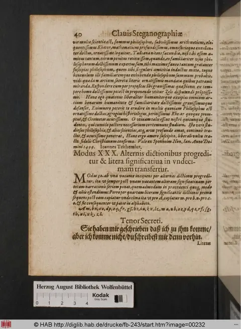
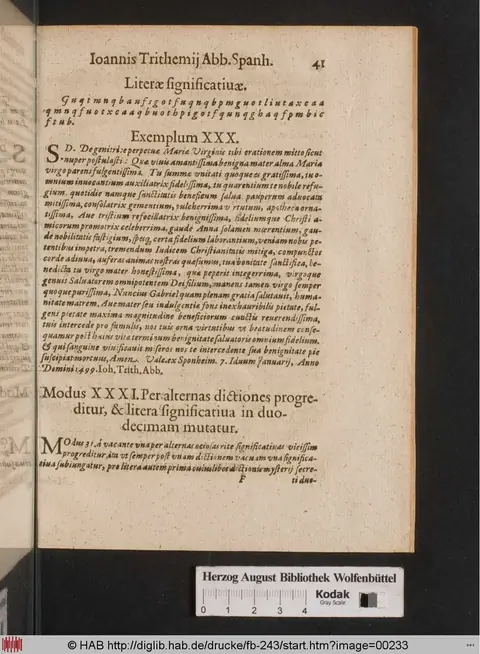
Clavis Steganographiae (Clavis triplex) — untranslated chunk full_chunk_0110
Style C scholarly rendering. GPT-5.5 fresh translation with footnoting against the angels / planets reference table. Source register: ocr_damaged_prose; OCR quality estimate: 2/5.
Mode 39: Alternating Significant Words and Alphabetic Transfer
This passage describes Trithemius’s thirty-ninth steganographic mode, in which meaningful words alternate with null words and are then interpreted through a shifted alphabet, followed by a German plaintext warning and a long sequence of significant letters.
Mode XXXIX
Of Johannes Trithemius, Abbot of Spanheim.^1
Mode 39. It also uses alternating words, and the first significant word is transferred to the twentieth position.^2
Mode 39: in reciprocal alternation, a word signifies after one vacant word, or with one vacant word preceding one significant word; then again, after one vacant word, there is one significant, signifying word. And so it continues successively to the end of the proposition.^3 Furthermore, if [unclear] the first significant word of each [sequence] is transposed to the twentieth position, the next following letter is to be taken according to the rule: for a take x; for b, c; for e, [unclear]; and so on in succession, as is clear in the alphabet itself.^4
Alphabet
a x, b x, c x, d x, e x, f x, g x, h x, i x, j x, k x, l x, m x, n x, o x, p x, q x, r x, s x, t x, v x.^5
Intention of the Secret
This is written to you: come here; it is my counsel that you do not [unclear]. For the plot is to drive you out, or to put you into some prison. Be on your guard.^6
Significant Letters
The significant letters begin: B p q r s t u v x y z a b c d e f g h i j k l m n o p q r s t u v w x y z ... The printed sequence then continues for many lines as a repeated alphabetical run, evidently serving as the letter material from which the mode extracts the concealed message rather than as continuous prose.^7
^1. Johannes Trithemius (1462-1516), Benedictine abbot of Sponheim/Spanheim, composed the Steganographia and related keys as works on concealed communication; the heading abbreviates him as “Abb. Spanh.”, abbot of Spanheim. ^2. Modus here denotes one numbered procedure in the cryptographic or steganographic key, not a literary “mode.” The phrase “in 20” is probably a positional or alphabetic instruction, but the OCR leaves its exact operation uncertain. ^3. Dictio significativa is a “significant word,” that is, a carrier word whose position or form contributes to the hidden message. Vacans designates a null or non-signifying word inserted to mask the pattern. ^4. The instruction appears to describe an alphabetic substitution or transfer after the selection of alternating significant words. The reading “tertia prima” and the subsequent equivalences are OCR-damaged, so the mechanical rule cannot be fully reconstructed from this excerpt alone. ^5. The alphabet as printed runs from a through v with x paired after each letter; this may be an abbreviated or malformed representation of the working alphabet for the substitution table. Early-modern Latin alphabets commonly treat u/v and i/j differently from modern English alphabets. ^6. The “Intention of the Secret” is in German rather than Latin. The phrase “du thust nicht” is syntactically incomplete as printed, and “vertreiben/cken” is OCR-damaged; the overall warning, however, is clear: the recipient is advised to come, because enemies intend expulsion or imprisonment. ^7. The heading Literae significatiae should be understood as “significant letters.” The enormous repeated alphabetic string is not translated word-for-word because it is cipher material, not lexical Latin prose.
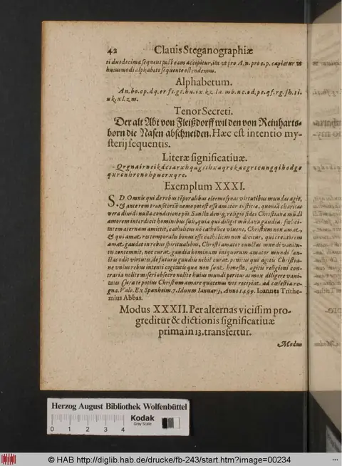
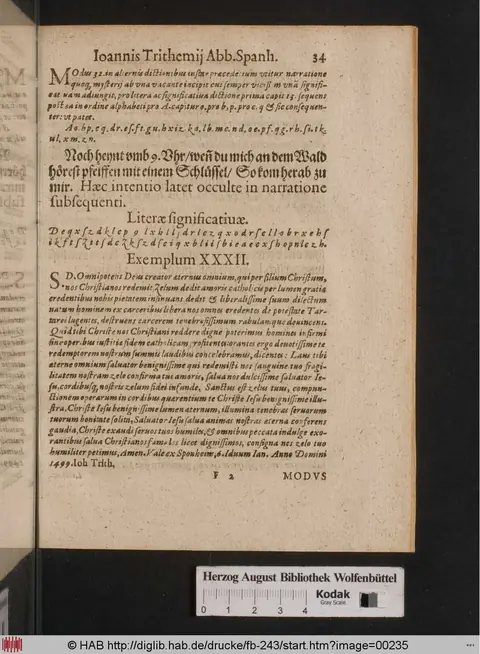
Clavis Steganographiae (Clavis triplex) — untranslated chunk full_chunk_0111
Style C scholarly rendering. GPT-5.5 fresh translation with footnoting against the angels / planets reference table. Source register: ocr_damaged_prose; OCR quality estimate: 2/5.
Mode 40: Alternating Words and a Shifted Significant Letter
The passage gives a damaged devotional cover text, explains a steganographic mode using alternating significant and null words with a shifted alphabet, supplies a German hidden message, and begins a polemical example against the Turks before the next chapter heading.
Prayer
O most gracious Jesus,^1 by your accustomed goodness [unclear], forgive me, I ask, with pardon, since your praise and glory [are] mine; you make me glad with joy and [unclear], my redeemer, and from your [unclear], etc. O Christ the King,^2 savior, inextinguishable light, I ask you: bring peace to my soul, enlighten me [as] the light of all. O glory of the faithful who seek you, lover of Christ [unclear], look upon me; grant blessedness and everlasting joys; grant the most fervent fires of your love [unclear]. Living Jesus, [unclear] of all [unclear] of the world, most merciful Jesus, through the pain of your blessed bitterness [conjectured: and] your passion,^3 grant me the light of understanding and of love for you [unclear], with the hooks [unclear] of a pure conscience [unclear] toward the prayer of light [unclear]. Have mercy on me, good Jesus, by your clemency [unclear], by the fullness of graces, the light of the heavenly citizens, etc.; pour in holy charity, most sweet and [unclear] joy [unclear]. Rescue me, examiner of every heart,^4 and grant me, with purity, gladness and exultation in the praises of your [unclear] glory [unclear] you, because the pains of your holy wounds [unclear] me. What shall I repay to your charity, my redeemer? I [unclear] tears to you, and your most powerful passion [unclear], blessed by the wounds of your body. O most gracious one, I give immortal thanks [unclear]; look upon your servant. Amen. Johannes Trithemius.^5
Mode XL
It uses alternating words, and transfers the first significant letter of each word to the twenty-first [place].^6
Mode 40
In [unclear] of the preceding [modes], it uses alternating words, the same null and significant words,^7 and transfers the first letter of every significant word to the twenty-first nearest following letter, so that the last [letter] is carried through the sequence: for A, z is taken; for b, a; for c, b; and so on, as will appear in the alphabet for this fortieth mode, which follows [unclear]. This mode, however, and all the others, is varied in different ways, so that the significant words may be single, alternate, or several together.
Alphabet
A.z. b.a. c.b. d.e. e.d. f.e. g.f. h.g. i.h. k.i. k.k. l.m. m.l. n.m. o.n. p.o. q.p. r.q. s.r. t.s. t.t. u.u. v.v. w.w. x.x. y.y. z.z.
Significant Letters
A.b.g.g.h.m.i.t.l.a.m.i.t.z.q.f.i.h.m.z.e.d.u.p.e.b.g.k.z.f.d.a.h.
die b c d g a q t b i d m c q d t s b k h b g c b b g r t b g d g b m e d q a d m a k i l d m.
Intention of the Secret
Tonight around nine o’clock, wait for me at the Schlag by the bridge; there I will look for you behind the trees.^8
Example LX
Do penance now, you wretched people, while the tribulations of our generation are still brief; you are hardened, though about to endure the most grievous miseries, the deaths of unfortunate human beings, and the cruelest things. The Turk^9 has invaded Christianity far and wide from Hungary^10 with an army in the Turkish manner, with men most savage in the arms of war. He has crossed the Danube^11 in the zeal of impiety; [unclear] are reported to be in agreement with his people. Every human being is at once moved where your zeal is, most wretched Christians; [unclear] constancy and devotion. Far and wide Christian kindness abandons its own people, the gravity of Catholic faith. Zeal and the fervor of divine love go far away; because of this, [unclear] of Christian faith, people will kill and [unclear] the rest. For the most audacious Turk will grievously break Hungary, Bohemia, Poland, and their cities; gathered infants, women, and virgins, even consecrated women, whom they should revere out of zeal for God, are taken captive and overcome most shamefully, and Catholics everywhere are horribly slain. In excessive cruelty he surpasses all [unclear] and brutes. He will suddenly throw all Germany into confusion with a most warlike army, unless a general defense of the princes is brought without delay. Let there be for him fire [unclear]; and let us, with the greatest contrition of souls, pray to God most intensely that he may convert us, forgive us our sins, mercifully deliver us from our enemies, who strive to hand our souls over to death. In the year of the Lord 1499, the eleventh day before the Kalends of March. Johannes Trithemius, Abbot of Sponheim.^12
G. 3. CAPL.
Chapter II: On the Other Twenty-Two Modes of Secret Writing, Which Are Contained in the Preceding Books
^1. Jesus is invoked throughout the cover prayer; such pious devotional prose functions here as carrier text for Trithemius’s steganographic procedure, not merely as an independent prayer. ^2. Christ the King and “inextinguishable light” belong to conventional late-medieval devotional vocabulary; the phrasing also suits a cipher context in which visible sacred language conceals another message. ^3. The reference to Christ’s “passion” and wounds draws on Passion devotion, especially meditation on Christ’s bodily suffering as a source of illumination, repentance, and affective union. ^4. “Examiner of every heart” echoes biblical language for God as the one who tests or searches hearts, e.g. Psalm 7:9 and Revelation 2:23 in the Vulgate tradition. ^5. Johannes Trithemius (1462-1516), Benedictine abbot of Sponheim and later Würzburg, authored the Steganographia and its explanatory Clavis, works that combine cryptographic method with angelological and devotional framing. ^6. “Mode XL” is a numbered cryptographic procedure in the Clavis: the instruction concerns the first letters of selected “significant” words, shifted according to a substitution alphabet. ^7. “Null” words are filler words used to make the carrier text read as ordinary prose; “significant” words carry the hidden message, here by their initial letters. ^8. The German hidden message reads: “Noch hempt umb 9. wart mein an dem Schlag bey der Brucken/da wil ich dich suchen hinder den Bautemen.” The translation treats hempt as damaged or dialectal “heut/heint” and Bautemen as “Bäumen” (“trees”). ^9. The Turk is a conventional early-modern Latin designation for the Ottoman enemy; in this example it also supplies plausible topical cover prose for a hidden message. ^10. Hungary, along with Bohemia, Poland, and Germany below, marks the east-central European theater through which late-fifteenth-century anti-Ottoman anxieties were commonly imagined. ^11. The Danube was a major frontier and military corridor in anti-Ottoman writing; crossing it signals invasion into Christian Europe. ^12. The date “XI Kalends of March” is 19 February in Roman inclusive reckoning; the manuscript’s “CCCC XCIX” gives 1499. Sponheim was Trithemius’s Benedictine abbey, hence the subscription “Abbas Sponheimensis.”
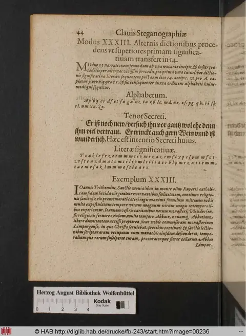
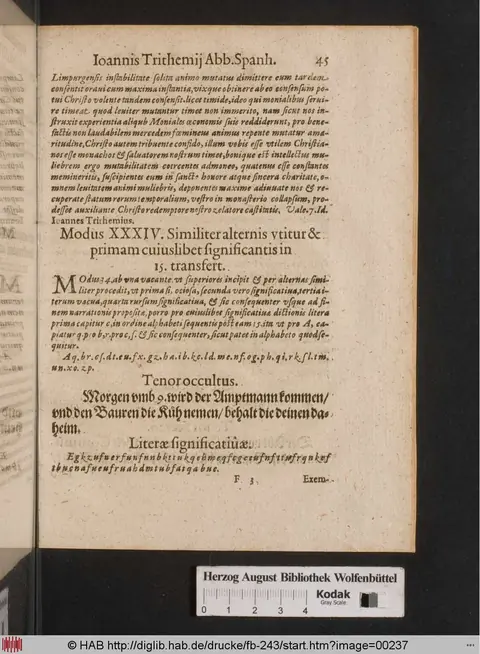
Clavis Steganographiae (Clavis triplex) — untranslated chunk full_chunk_0112
Style C scholarly rendering. GPT-5.5 fresh translation with footnoting against the angels / planets reference table. Source register: ocr_damaged_prose; OCR quality estimate: 2/5.
First and Second Modes of the Second Chapter
Trithemius introduces additional steganographic writing procedures based on alphabetic transposition, then gives the first mode, its shifted alphabet, a concealed German message, a sample cover text, and the opening of the second mode.
In the preceding chapters of this first book, most serene Prince, I arranged in order forty modes of our art of steganography,^1 whose abundance, although it may suffice for writing anything whatever in secret, nevertheless [conjectured: I judged it worth the effort] to demonstrate to the studious a path for pursuing greater things, and to explain other modes of writing by examples. Therefore, just as in the preceding chapter, among the other twenty-one modes, the last was made by the transposition^2 of the letters of the alphabet, so in the following modes, according to the order of solution [unclear], it is necessary for us to set five significant letters^3 before [conjectured: the preceding mode] in each individual mode. In this anticipation, the first mode of this chapter will agree with the last of the preceding one, the second with the penultimate, and so on correspondingly to the last; the appropriate transpositions vary the mode.
First Mode of This Second Chapter: It Uses Individual Significant Letters, and Each Letter Is Taken in One [Place]
The first mode of this second chapter uses individual significant words,^4 and each letter is transferred into the immediately preceding first [letter/position] through five words [unclear]. Thus, in the seventeenth mode [unclear], as it were, the immediately following significant letter is placed; here, by contrast, the preceding letter is placed at the beginning of the chapter [unclear]. First, however, you must draw the alphabet in a circle,^5 both in this mode and in all the following modes in which letters are transposed. Thus here Z is taken for A, A for B, B for C, as is plain in the alphabet arranged in a circle.
This mode, like all the rest, can be varied in many ways: by alternate letters, by pairs, by threes, by fours, or by more, at the pleasure of the writer, provided that he assigns the proper figures to each. Otherwise he himself will easily be able to forget what he has written, and no one will perceive his intention. Now, however, under the letters [unclear] any letter can be designated [unclear]; but let us now proceed to explain this mode more briefly, though more closely, than we did above.
Alphabet
A = Z; B = A; [conjectured: C = B; D = C; E = D; F = E; G = F; H = G; I = H; K = I; L = K; M = L; N = M; O = N; P = O; Q = P; R = Q; S = R; T = S; U = T; X = U; Z = X/Y] [the printed sequence is OCR-damaged].
Intention of the Secret
“Wart mein Morgen umb neunte mit Gewalte.”^6
Significant Letters
“Tempus transit.” Z.i.d.t.z.q.f.h.l.b.m.d.u.q.g.m.l.i.l.a.m.t.m.l.b.f.d.s.z.k.f.i. follows.
Example of the First Mode
“Time passes; let us lift up, humbly, the mind [unclear] an element, what thus [unclear], lightly and sincerely, while playing; every day we go astray. The time for playing is at hand; [unclear] the darknesses of motions, and with tongues this [unclear], as torpor fails in flight; certain [unclear] with catholic sanctity. Amen. John Trithemius, abbot of Spanheim,^7 wrote this on the sixth day before the Kalends of March,^8 in the year of the Lord’s Incarnation M.I.D. [unclear].”^9
Second Mode: It Uses Alternate Words, and the Significant Letters Are Transferred into the Second Preceding [Position]
The second mode of this chapter begins with one vacant word. It uses alternate words and eight significant [letters/words] in the order of the proposition [unclear], and the first letter, together with those of the significant word, is anticipated by being transferred into the second letter immediately preceding: so that X is taken for A, Z for B, and so on for C and the rest. This follows successively, as appears in the round table placed here. In the plain alphabet, which he set down for making this mode of writing, the red letter signifies our alphabet; from it any of those letters, placed in its own location in the mode of writing, is laid over the black letter in the round table and is taken for the narration of the mystical proposition.^10
Alphabet
[The alphabet for the second mode begins here, but the supplied excerpt breaks off.]
^1. “Steganography” here is Trithemius’s technical term for hidden writing: the passage belongs to the procedural “key” tradition of the Steganographia, where apparently devotional or nonsensical cover prose carries concealed letters. ^2. “Transposition” (transpositio) denotes a substitutional displacement in the alphabet rather than a modern positional anagram: here each plaintext letter is represented by a preceding letter in a circular alphabet. ^3. “Significant letters” are the operative letters that carry the secret message, as opposed to the filler or cover text that makes the writing appear innocuous. ^4. “Significant words” (dictiones significativae) are cover-text words selected by rule so that one of their letters encodes the secret; the OCR alternates between “letters” and “words,” but the examples show both levels of operation. ^5. The circular alphabet is a cipher wheel or tabular alphabet: the alphabet wraps around so that, for example, Z can stand before A. ^6. The German secret sentence means approximately: “Wait for me tomorrow around the ninth hour with force/armed strength.” The phrasing is early-modern and the OCR may affect the exact reading. ^7. John Trithemius (Johannes Trithemius, 1462-1516) was abbot of the Benedictine monastery of Spanheim/Sponheim; the byline identifies him in that monastic office. ^8. “Sixth day before the Kalends of March” uses Roman inclusive reckoning; depending on whether the year is counted as a leap year in the source’s calendar, it corresponds approximately to 24 February. ^9. “Year of the Lord’s Incarnation” is the Christian Anno Domini dating formula. The numeral “M.I.D.” is not a normal Roman numeral as printed in the OCR and is therefore left unresolved. ^10. The “red” and “black” letters refer to a two-color printed or manuscript cipher table; the OCR preserves the color distinction but not the table itself.
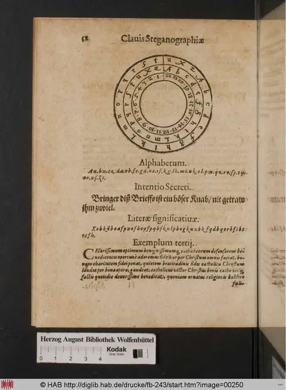
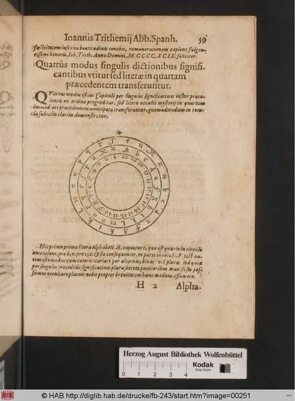
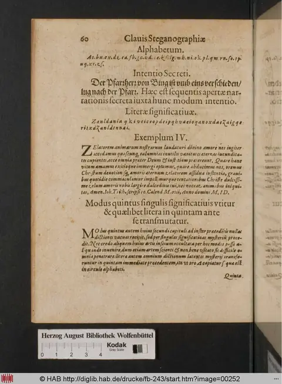
Clavis Steganographiae (Clavis triplex) — untranslated chunk full_chunk_0118
Style C scholarly rendering. GPT-5.5 fresh translation with footnoting against the angels / planets reference table. Source register: ocr_damaged_prose; OCR quality estimate: 3/5.
The Three General Keys of Steganography
The passage explains Trithemius's three general keys for reading the Steganographia: vowel-consonant substitution, null-letter counting rules, a one-letter alphabetic shift, and a partitioning method for concealed text.
General Key of Steganography
The section is headed General Key of Steganography^1 and, in the running page title, attributed to Johannes Trithemius, Abbot of Spanheim.^2 [conjectured: If the vowel a occurs in your secret sense, put the consonant b in its place], and conversely. If the letter b has to be written, write the vowel a in place of b, and proceed in the same way in the remaining modes.^3 For variation these modes are also inverted by retrogradation: for a put g, for e put f, for i put d; since i is the middle term, it always remains fixed and will never be changed.^4 The visible scheme gives the corresponding vowel-consonant substitutions as:
| a | e | i | o | u |
|---|---|---|---|---|
| g | f | d | c | b |
| n | m | l | k | h |
| t | s | r | q | p |
Now, for example, if the word Omnipotens is to be written by the first mode, it is written [conjectured: Fmndpftcns]; by the second, Moulpmtkus; by the third, Smnrasuqno. Conversely, by the three later modes it is written as follows: by the first, [conjectured: Cmndpctfns]; by the second, Kealpktmas; by the third, [conjectured: Qmnruqasne]. In this way we proceed with whole sentences. From these six previously described modes arise the following rules, according to which you will regulate yourself in reading our book; each of the subsequent modes is varied by any one of the rules just described. You will observe the variation of those modes in many parts of our book, especially in the conjurations of demons, where our secrets are concealed and are revealed to those who know our rules and seals.^5
As an example let the following sentence serve you; although it can be written by all the rules already stated, it has pleased us to set it down here by the first mode: Miserere omnipotens Deus animabus famulorum tuorum in te pie requiescentium: 'Have mercy, almighty God, on the souls of your servants who rest piously in you.'^6 By the first mode this sentence becomes: [conjectured: Mdscrcrc fmndpftcns icgs bndmbags obmglfrgm tgfrgm dn tc pdc rcqgdcsccntdgm], etc. Since, because of the lack of vowels, no word meaning anything is supplied here for insertion into our book among so many consonants, we have followed the rule of the following example by taking the aforesaid consonants: [conjectured: Midosa coracir ocafa mini dapofa ticonusa], etc. From these letters only the first letter is significant for you; immediately after it follows a non-significant or vacant letter, and so alternately, as the points marked above the significant letters show.^7
For the sake of abbreviation, all the rules and variations are shown below by numbers. In these examples, whenever 0, the arithmetic sign or zifrum, is placed, it denotes that number of non-significant letters for you; the number immediately following denotes that number of significant letters.^8
First mode: 10 10 10 10 10 10 10 10, etc.
Second mode: 01 01 01 01 01 01 01 01, etc.
Third mode: 200 200 200 200 200 200 200 200, etc.
Fourth mode: [conjectured: 002] [conjectured: 002] [conjectured: 002] [conjectured: 002], etc.
Fifth mode: 0001 0001 0001 0001 0001 0001 0001 0001, etc.
Sixth mode: 1000 1000 1000 1000 1000 1000 1000 1000, etc.
Seventh mode: 0002 0002 0002 0002 0002 0002 0002 0002, etc.
Eighth mode: 2000 2000 2000 2000 2000 2000 2000 2000, etc.
The Second General Key
The second general key is made in this manner: the writer precedes and the reader follows.^9 Thus, in this example, 'Have mercy, almighty God, on the souls of your servants,' etc., becomes: lhrdqdq nlmbprpsdmr edtr zmhlzat ezlkngtfsngtl, etc. Since these letters, joined in this way, signify nothing, they likewise appear in our book enciphered through the preceding eight examples or modes.
The Third and Last General Key
The third and last general key is constructed in this way. If you wished to write 'Have mercy, God,' etc., as above, you will do this: count all the letters of your intended sense and divide them into as many parts as you choose. For example, if you wished to divide them into two parts, for one part of the whole sentence set above you will have forty-five letters; when divided, twenty-two will come to one part, and one remains, which at the end you will always [conjectured: append to the rest].^10
^1. The Clavis generalis is the explanatory 'key' to the Steganographia's hidden-writing procedures. The damaged OCR here corresponds to the Clavis Steganographiae / Clavis generalis triplex tradition; restored readings were checked against Thomas Ernst's online restoration: https://steganographia-ernst.com/. ^2. Johannes Trithemius (1462-1516), Benedictine abbot of Sponheim or Spanheim, composed the Steganographia as a work whose surface language of spirits and conjurations conceals practical cryptographic instructions. ^3. Modus here means a specific cipher procedure, not merely a stylistic 'manner': each mode defines how vowels, consonants, significant letters, and null letters are substituted or counted. ^4. Retrogradation is used in a cipher sense: the substitution pattern is reversed through the displayed series. The statement that i remains fixed reflects its place as the middle vowel in Trithemius's five-vowel scheme. ^5. The 'conjurations of demons' are the notorious cover-text of the Steganographia. In this Clavis, Trithemius presents them as containers for concealed messages, readable by those who know the regulae and sigilla, that is, the governing rules and identifying cipher signs. ^6. Miserere evokes the Vulgate incipit of Psalm 50/51, 'Miserere mei Deus,' but the full sentence here is a liturgical-style prayer for the dead rather than a direct biblical quotation. ^7. Significant letters carry the hidden message; non-significant or vacant letters are nulls. The example inserts vowels and syllabic padding so that an otherwise consonant-heavy cipher stream can be disguised as pronounceable nonsense. ^8. Zifrum, from medieval Latin cifra/zephirum, denotes zero in arithmetic and is historically related to the word 'cipher.' Trithemius uses 0 as a compact notation for null-letter slots. ^9. 'The writer precedes and the reader follows' describes a one-letter alphabetic shift: the writer substitutes the preceding letter, and the reader recovers the plaintext by moving forward one letter. ^10. The third key is a partitioning or transposition rule: the plaintext is counted, divided into chosen parts, and any remainder is carried to the end. The OCR breaks off after semper, so the final action is supplied only as a contextual conjecture.
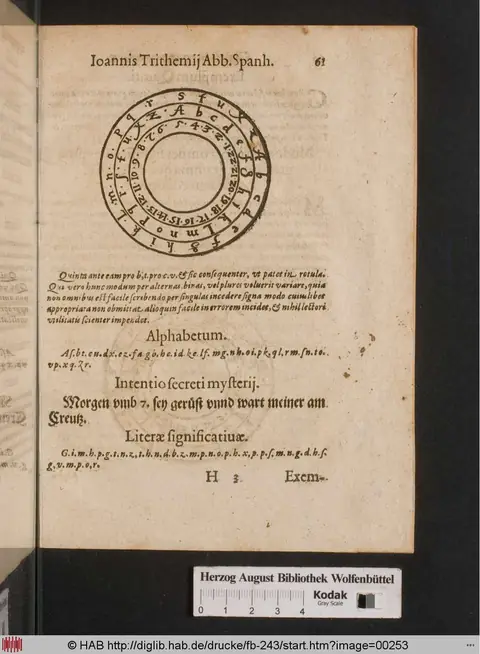
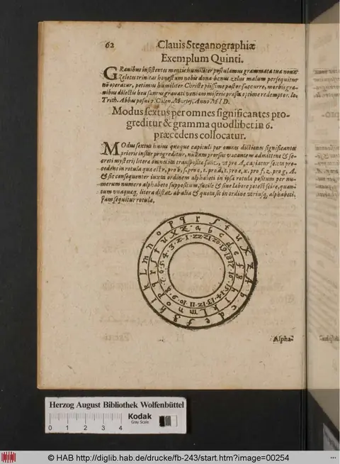
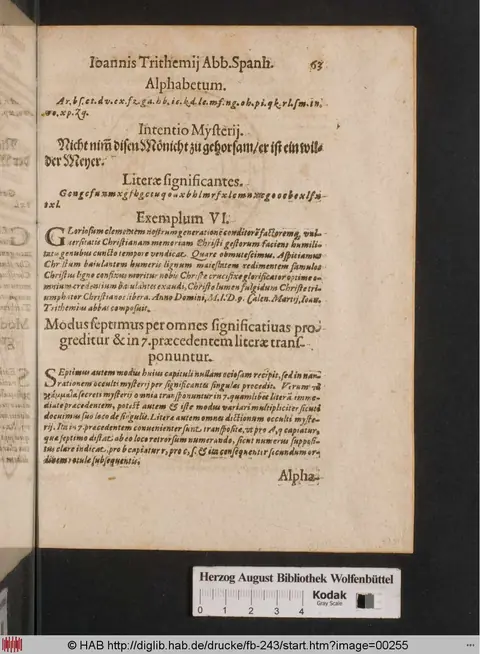
Clavis Steganographiae (Clavis triplex) — untranslated chunk full_chunk_0119
Style C scholarly rendering. GPT-5.5 fresh translation with footnoting against the angels / planets reference table. Source register: ocr_damaged_prose; OCR quality estimate: 2/5.
Closing Instructions for Reading the Clavis
The passage gives final procedural directions for applying Trithemius’s variable rules to disguised letter-sequences, then closes with a request for prayer and the end of the work.
[conjectured: You will always] append them to the remaining letters and write them in the same way as marked below, and afterward you will vary them according to the rules stated above.^1
[unclear cipher sequence: Mainsiemaebuers ofmanniuplotreuns iducourfu.] And this is the true form, varied in two ways. By the third method it is done thus: [unclear cipher sequence: Mesinafime dnrcleuors reau omnimimu raopbrouutsm.] By the fourth method, however, thus: [unclear cipher sequence: Miauipnifoio et mr reanenbmrs ut edfu oefu muarismu], and so forth.^2
And by proceeding in this way by division, we advance as far as eight parts; afterward, in order to make the letters signify something to the reader, we proceed in our book by the preceding eight rules, with other vowels interposed.^3 You will have no other difficulty in reading our book except this: that, at the beginning, you should test each conjuration by any one of our methods for discovering our meaning.^4 This, with the present key, will soon be clear to your diligence.^5 Therefore we ask that, for the salvation of our soul, you be willing to say the Lord’s Prayer.^6
End.
^1. The opening word appears as “temper,” but the context strongly suggests semper (“always”); the sentence continues a technical instruction from the preceding page. ^2. The strings printed here are not ordinary Latin but specimen cover-text or cipher-text; because the OCR and/or print is corrupt, they are retained only as uncertain sequences rather than normalized. ^3. “Eight parts” and “eight rules” refer to the local combinatory procedure of the Clavis, in which meaningful content is recovered from apparently nonsensical letter-groups by applying specified substitutions or divisions. ^4. Coniuratio in the Steganographia is the outward form of an angelic or magical adjuration, but in the Clavis it is treated as a textual unit to be decoded for concealed meaning. ^5. Clavis (“key”) is both the title-marker of this explanatory text and the technical instrument by which the hidden sense of the Steganographia is opened. ^6. The “Lord’s Prayer” is the oratio Dominica, the prayer taught by Christ in Matthew 6:9-13 and Luke 11:2-4; Trithemius closes with a conventional request for intercessory prayer for his soul.